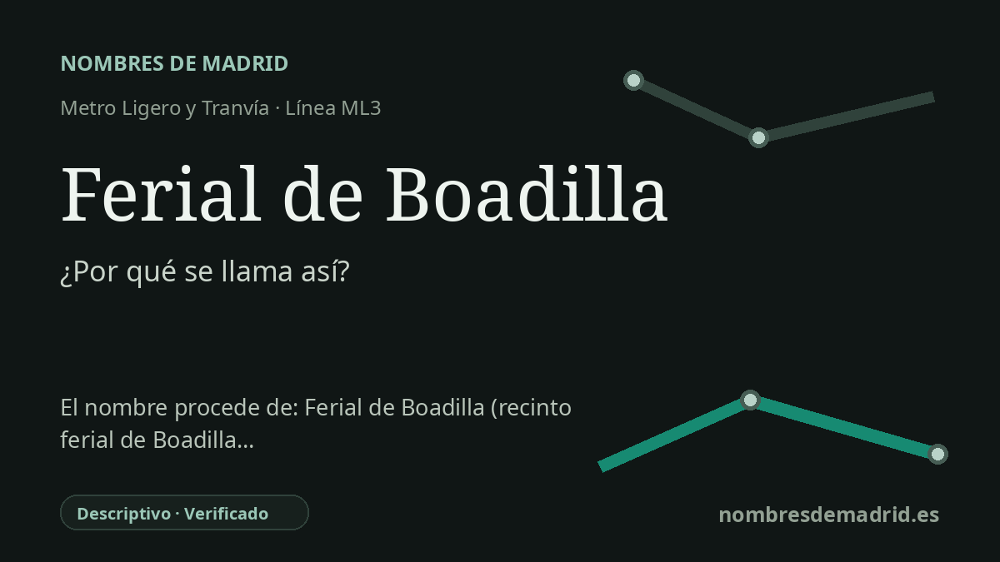

Publicado el · Investigación de Nombres de Madrid · Cómo verificamos cada origen · 7 fuentes consultadas
Respuesta rápida
Ferial de Boadilla es un nombre descriptivo: orienta a los viajeros hacia el recinto ferial municipal de Boadilla del Monte, situado junto al metro ligero. El recinto está especialmente ligado a las fiestas de octubre en honor a Nuestra Señora del Rosario.
La historia del nombre
El nombre Ferial de Boadilla es práctico y descriptivo. Identifica la parada de la ML3 por uno de los equipamientos públicos cercanos: el recinto ferial municipal de Boadilla del Monte. Metro Ligero Oeste describe la estación como situada junto a la carretera de Villaviciosa y próxima al recinto ferial de la localidad, al Parque Juan Pablo II y a la biblioteca José Ortega y Gasset.
La palabra ferial procede de feria, voz española que puede referirse a un mercado público, a unas fiestas, al conjunto de instalaciones recreativas de feria o a un espacio expositivo. La RAE hace derivar feria del latín feria y recoge justamente los sentidos que importan aquí: el lugar o las instalaciones de una feria y los festejos asociados. En el nombre de la estación, la palabra no es simbólica: señala un espacio municipal concreto.
El recinto ferial de Boadilla está documentado en normativa municipal. La ordenanza de 2016 sobre el recinto ferial lo define como el espacio físico donde se desarrollan las actividades de feria durante las fiestas patronales de Boadilla del Monte. La misma ordenanza lo sitúa en la explanada de la carretera de Villaviciosa de Odón, junto a la parada de metro ligero, y señala que la fiesta de Nuestra Señora del Rosario se celebra cada año en octubre.
Por eso la parada funciona también como una pequeña pista sobre la vida cívica local. Fuera de las fiestas, es una estación en superficie de la ML3, recogida por el Consorcio Regional de Transportes de Madrid con acceso en la Ctra. de Boadilla-Villaviciosa, 13A. Durante las fiestas y otros eventos municipales, el nombre se vuelve más literal: el tren deja al viajero junto al espacio de atracciones, puestos, carpa municipal y otras instalaciones festivas.
Conviene tratar con cuidado la parte Boadilla del nombre. La investigación toponímica actual no respalda que el nombre de la localidad proceda de Beatriz de Bobadilla; el topónimo es anterior a esa asociación personal. Toponomasticon Hispaniae integra Boadilla en una familia amplia de topónimos Boad-, Bovad- y Bobad-, con posibles raíces en una voz relacionada con bóveda o en un latino-romance bovata, «dehesa boyal» o lugar de pasto de bueyes. Para esta estación, sin embargo, la etimología segura es más sencilla: es la parada del ferial de Boadilla del Monte.